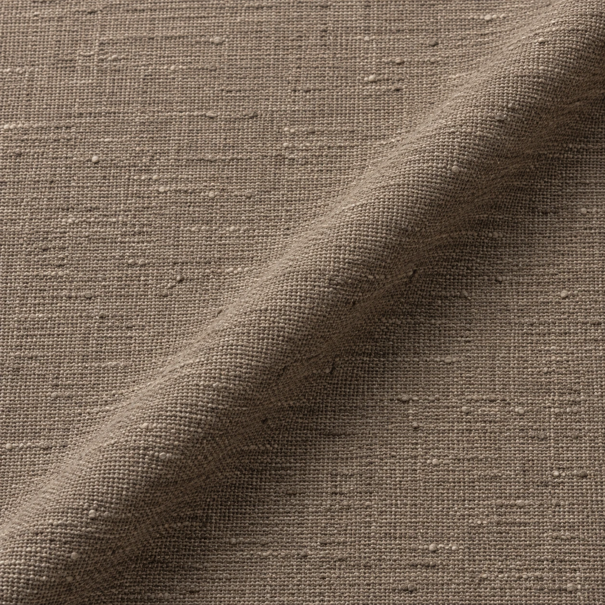

The cloth guide / 01
Read the surface.
A few clear questions bring the real cloth into focus.
Understanding cloth
Names begin a conversation. The stock completes it.
Pakistani men's unstitched cloth spans light plains, easy-care trade categories, textured winter fabrics and woven occasion surfaces. A category name describes a market language, not a guaranteed fibre percentage.
For every actual bolt, confirm composition, width, cut, colour and care before committing to a tailored garment.
Fabric families / 02
Ten ways into the collection.
Lawn
A fine, light plain-weave direction often chosen for warm weather. Cotton and blends both occur in the market.
Latha
A clean plain-weave direction associated with everyday traditional dress. Confirm the actual fibre and finish.
Cambric
A closely woven, smooth plain-weave direction with a soft but composed hand.
Wash & Wear
An easy-care trade category, not a single fibre recipe. Actual composition and finish must be checked.
Dobby
A small figured weave that creates pattern in the cloth itself rather than through a print.
Cotton satin
A sateen-style surface with restrained directional lustre. Confirm the actual fibre blend.
Karandi
A textured trade category that can contain different fibre mixes. Inspect the actual cloth before choosing a cut.
Khaddar
A more pronounced woven surface associated with cooler weather. Construction varies by source.
Boski
A lustrous traditional trade name that does not, by itself, establish silk content.
Jacquard
A woven figure produced by the structure of the cloth. Fibre content and motif scale vary.
Questions to ask / 03
Before the first cut.
Does the trade name guarantee fibre content?
No. Wash & Wear, Boski and Karandi are sold with differing compositions in the supplied research. Check the actual stock or supplier declaration.
Is 4–4.5 metres always the correct cut?
It is a typical men's shalwar kameez range from the market dossier, not a fixed requirement. Width, body measurements and design can change it.
Are these website images real stock photography?
No. The macro visuals are generated texture studies for the mockup. A physical swatch and true-to-stock imagery are needed before a live catalogue.
How are the PKR prices used?
They are illustrative budgets for the website mockup, informed by the supplied 2026 market dossier's broad segments. They are not verified LOOMZ prices or checkout amounts.
What does the tailoring price include?
The displayed stitching bands are mockup guides. A live quote should define garment, details, fittings, alterations and timing before work begins.
Now explore